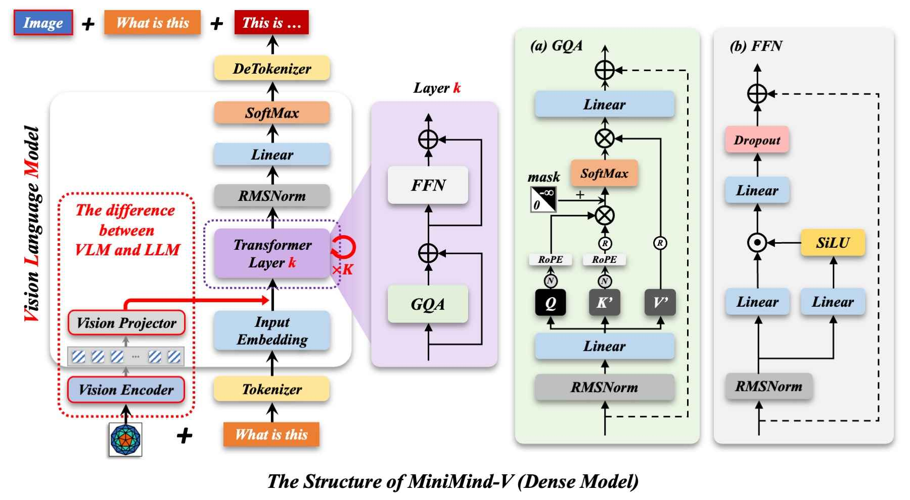

1. 建立 VLM 直觉
把图像看成另一种 token 流：视觉编码器负责读图，Projector 负责翻译，LLM 继续做下一个 token 预测。
读基础知识
MiniMind-V 在 MiniMind 语言模型上增加冻结的视觉编码器和 MLP Projection，把图像 patch token 对齐到文本 token 空间。
LLM、VLM、token、embedding、ViT patch、SigLIP2、Projector、SFT、MoE、DDP、bf16、断点续训。
下载权重与数据、预览 parquet、启动命令行推理、运行 Gradio WebUI、选择冻结策略、读训练日志和 loss 曲线。